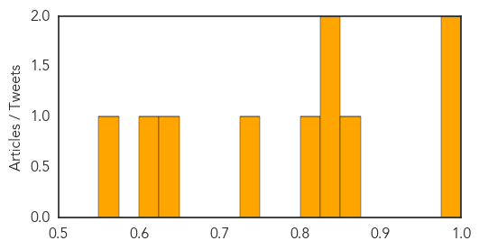
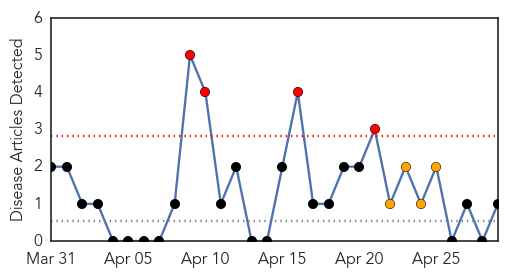
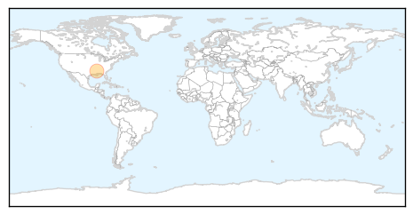

Cholera
30-Day Web Trend
0 alerts, 0 warnings

30-Day Twitter Trend
0 alerts, 0 warnings

Article Locations

Article Confidences
Top Articles:
- 0.998
- Relief Workers Aim To Stave Off Cholera, Other Diseases, Amid Camps And Poor Sanitation
- 0.994
- After the aftershocks, Nepal’s next big worry is cholera
- 0.862
- Linking the World delivers LifeStraw® Community water purifiers to help avert secondary disaster in Nepal
- 0.846
- Haiti Fast Facts
- 0.845
- Haiti Fast Facts
- 0.816
- How Not to Report on an Earthquake
- 0.744
- Catholic bishops call on African leaders end to complicity with Mugabe
- 0.638
- Banish Spectre of Chronic Diarrhoea by Closing the Immunisation Gap
- 0.605
- Nepal earthquake death toll above 4,500
- 0.571
- MSF warns of looming humanitarian disaster in Upper Nile state
Top Tweets:
-
No tweets found for Apr 29, 2015
West Nile Virus
30-Day Web Trend
4 alerts, 4 warnings

30-Day Twitter Trend
0 alerts, 0 warnings

Article Locations
Article Confidences

Top Articles:
Top Tweets:
-
No tweets found for Apr 29, 2015